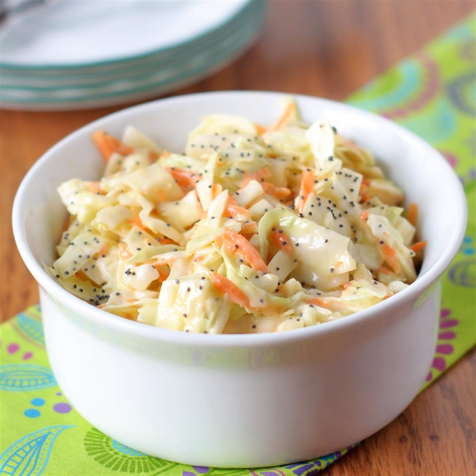

Sweet Restaurant Slaw

"This tastes just like the cole slaw served at popular fried chicken or fish restaurants. It's excellent with burgers or on top of BBQ'd pork sandwiches, too!!!"
Ingredients
- 1 (16 ounce) bag coleslaw mix
- 2 tablespoons diced onion
- ⅔ cup creamy salad dressing (such as Miracle Whip™)
- 3 tablespoons vegetable oil
- ½ cup white sugar
- 1 tablespoon white vinegar
- ¼ teaspoon salt
- ½ teaspoon poppy seeds
Directions
- Combine the coleslaw mix and onion in a large bowl.
- Whisk together the salad dressing, vegetable oil, sugar, vinegar, salt, and poppy seeds in a medium bowl; blend thoroughly. Pour dressing mixture over coleslaw mix and toss to coat. Chill at least 2 hours before serving.
Nutrition Facts
Per Serving: 200 calories; protein 0.8g; carbohydrates 22.5g; fat 12g; cholesterol 11.2mg; sodium 252.5mg.
Main page